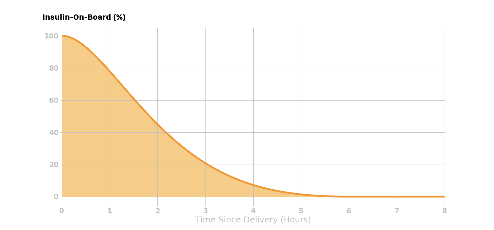

Infusion Site Failures¶
Some of the most frustrating and dangerous times are the result of insulin infusion site failures. When using Loop, site failures most likely will lead to your active insulin to be incorrect. Insulin that the pump thought it had delivered to your body is instead blocked by a kinked cannula or leaking out on your skin surface. Loop will have an incorrectly higher active insulin value since it thought that insulin had been delivered, but in reality it was not. Therefore your Loop will be less effective in closed loop mode to bring down any resulting high blood glucose from the site failure.
To deal with insulin site failures, there is no way to 100% recover from the issue immediately. Generally, we have no idea how much insulin has failed to deliver nor when the failure happened, so simply replacing that exact amount of insulin will not be possible. There are steps to help transition back to successful closed looping.
Take care to not rage bolus in this situation and give the new site a chance to start absorbing insulin. In cases where basal insulin delivery has failed, it takes a full two hours for resumed basals to come up to full effect for blood glucose impacts. There will be a lot of patience and attention during the 4-6 hours after a failed site is replaced, unfortunately.
Open Loop¶
Open loop mode is a first line of defense during this situation. By open looping for a duration of 6 hours, you will give your Loop an opportunity to have accurate active insulin (i.e., IOB) accounted for again since that amount of time is the length of your insulin activity duration. If you are very impatient, waiting out at least 4 of the 6 hours will get most of your active insulin accounting back into range. As you can see from the figure below, at 4 hours there is only less than about 10% of the insulin tail remaining, so the bulk of active insulin will be correctly accounted for by then.

Prime Insulin¶
If you are more certain about how much insulin is missing from your Loop's tracking of active insulin, you can choose to deliver insulin using the "prime" delivery function in your Medtronic pump while having your tubing connected to the new, working infusion site. Assuming you are using a Preferred Data Source set to Event History (most people are since this is the default setting), then prime insulin is not counted towards active insulin. In this way, you can deliver insulin to make up for some of the insulin that Loop had thought had been delivered (but wasn't).